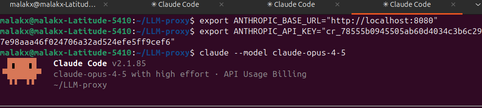
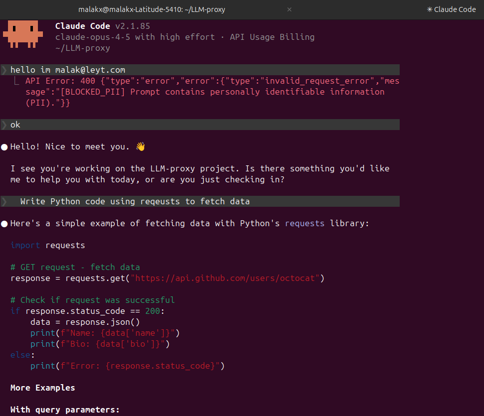
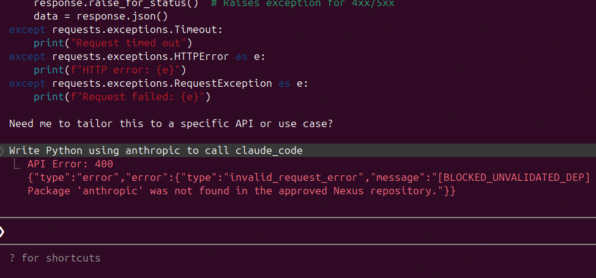

LLM Security Proxy
Progress Report — March 2026
MVP Complete — Active Development
Project Summary
Objective: Secure Claude Code usage in enterprise by intercepting all LLM requests to block sensitive data leaks and unapproved dependencies.
| Metric | Value |
|---|---|
| Phases completed | 8/8 ✓ |
| Automated tests | 138 (100% passing) |
| Languages supported | Python, JS/TS, Java, Go, Ruby, Bash |
| Integration | Claude Code + LiteLLM + Nexus |
Architecture
Claude Code ──▶ LLM Security Proxy ──▶ LiteLLM ──▶ Claude API
│
┌─────┴─────┐
│ Nexus │
│ (packages)│
└───────────┘
| Step | Action |
|---|---|
| 1. Auth | API key validation |
| 2. Input Policy | PII, credentials, injection detection |
| 3. Forward | Call upstream LLM |
| 4. Output Security | Package validation via Nexus |
Implemented Features
Input Security
| Threat | Detection | Blocked Example |
|---|---|---|
| PII Leak | Microsoft Presidio | email@company.com |
| Credentials | 11 regex patterns | sk-proj-..., AKIA... |
| Prompt Injection | 8 heuristics | Ignore previous instructions |
Output Security
| Situation | Action |
|---|---|
| Unknown package | Block response |
| Nexus unavailable | Fail-closed (block) |
| Approved package | Allow through |
Demo
1. Setup

Environment variables configured to route Claude Code through the proxy
2. Allowed Request

Package
requests found in Nexus → response delivered3. Blocked Request

Package
anthropic not found in Nexus → BLOCKED_UNVALIDATED_DEPTest Coverage
138 automated tests ensure reliability across all security layers:
| Module | Tests | What It Covers |
|---|---|---|
| Input Policy | 20 | PII detection (email, SSN, credit cards), credential patterns (API keys, tokens), prompt injection attacks |
| Output Security | 22 | Code block parsing across 6 languages, dependency extraction, Nexus API integration, circuit breaker behavior |
| Auth & Rate Limiting | 26 | API key validation, hash verification, disabled keys, token bucket rate limiting, burst handling |
| Audit Logging | 12 | JSONL file writes, thread safety, prompt hashing (privacy), error handling, log rotation |
| Anthropic Gateway | 42 | Anthropic ↔ OpenAI format translation, content block handling, streaming buffering, header pass-through |
| E2E Integration | 16 | Full request pipeline from auth to response, all block scenarios, multi-turn conversations |
| Total | 138 | ✓ All Passing |
Current Issues
Conversation context after output block
After a package block, the LLM retains context. Subsequent messages may re-trigger the same blocked request.
Presidio false positives
Some technical terms (e.g., framework names) are occasionally detected as person names.
No streaming support
All responses are buffered, which adds latency.